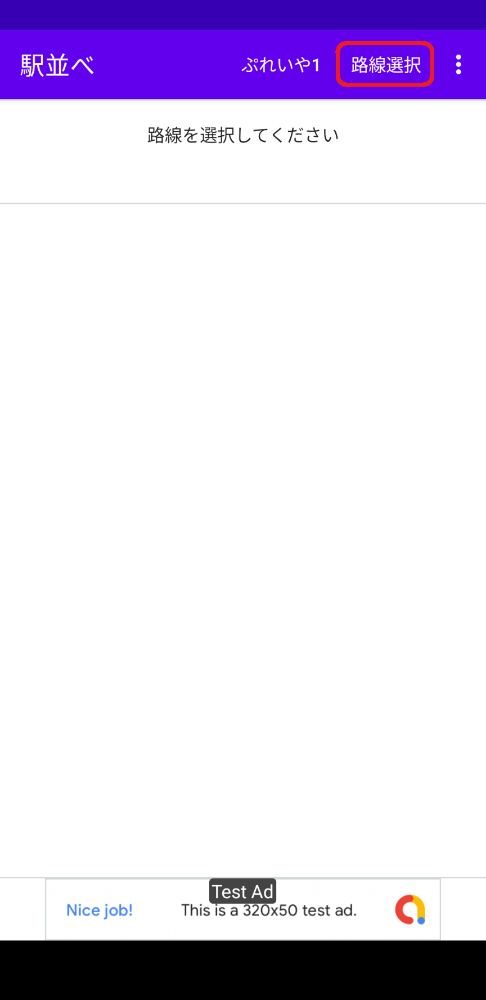
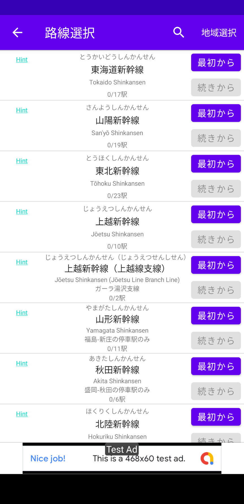
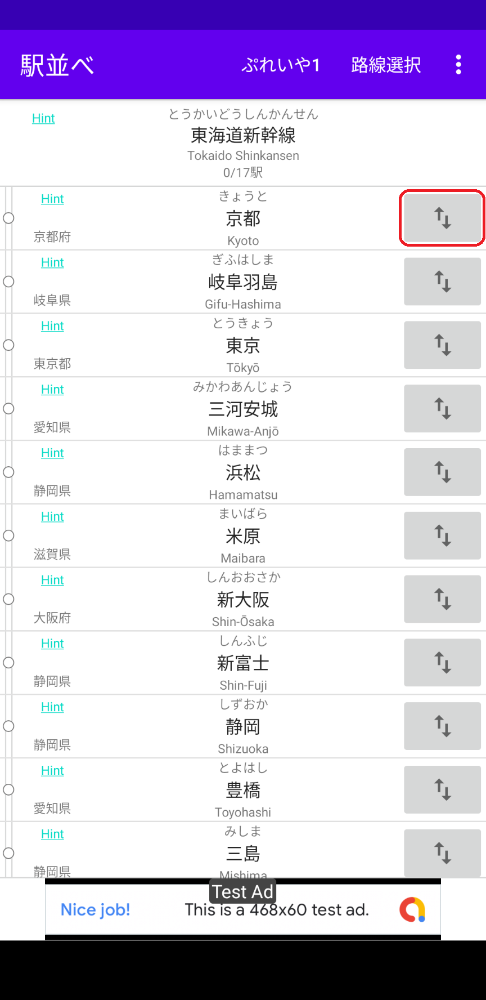
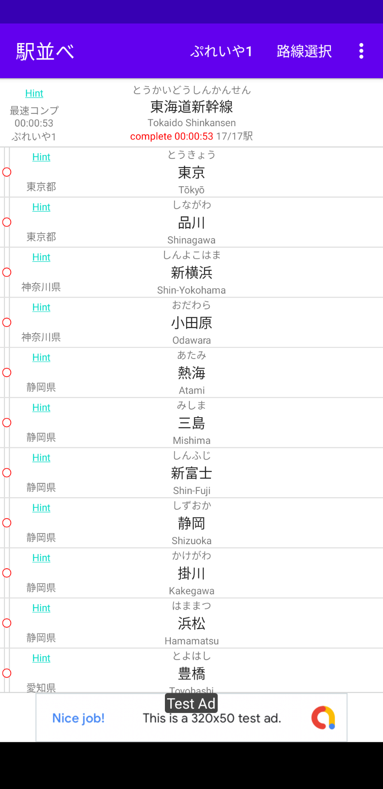
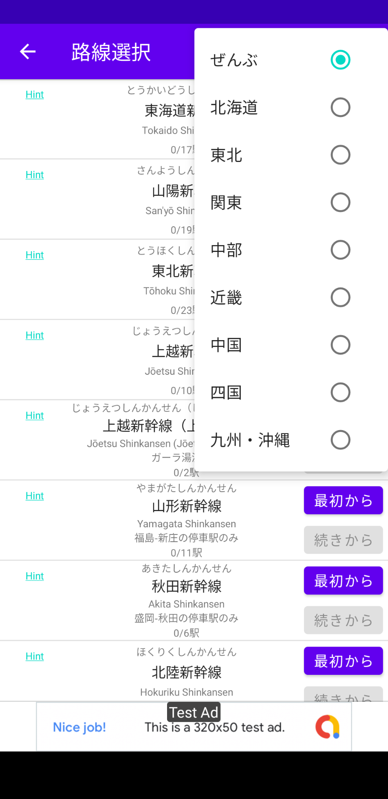
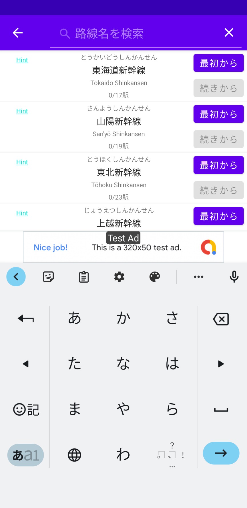
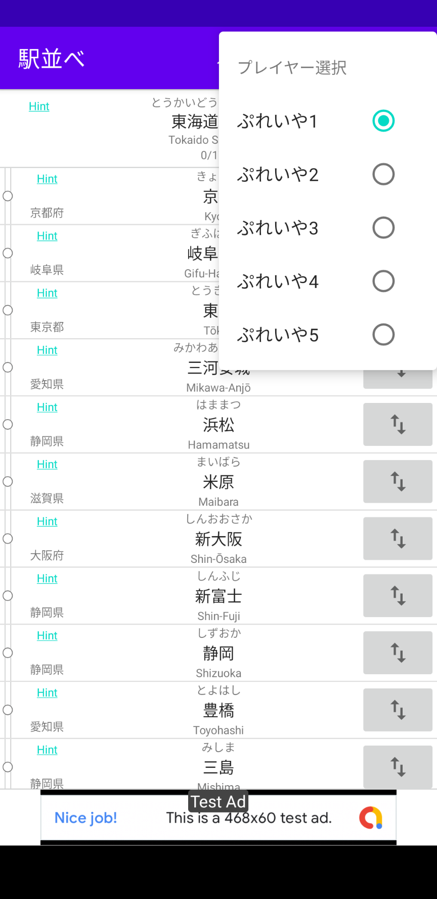
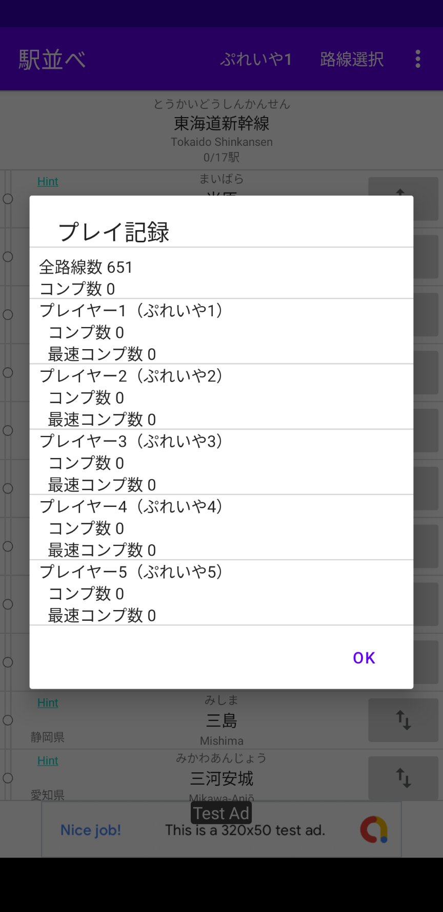
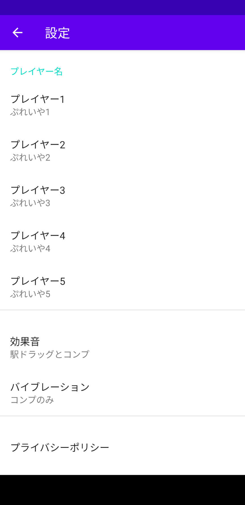

遊び方
「駅並べ」は全国9000駅を路線毎に並べるゲームです。初回起動時はまず画面上部の「路線選択」をタップし路線選択画面を表示します。
「駅並べ」は全国9000駅を路線毎に並べるゲームです。初回起動時はまず画面上部の「路線選択」をタップし路線選択画面を表示します。

路線選択画面が表示されたら、お好きな路線の「最初から」をタップします。ここでは「東海道新幹線」をタップします。

タップすると「東海道新幹線」の駅を並べる画面に変わります。最初はランダムに並んでいますので「東京」から「新大阪」までの17駅を路線図の順に並べます。駅の並べ替えは駅名の左側にある「ハンドル（上下の矢印）」をドラッグすることにより行います。

17駅全てを順に並べ終わるとコンプリートです。路線名の下に「complete」とコンプリートタイムが赤文字で表示されます。

アプリ起動で最初に表示される画面です。上部に路線名、その下に駅のリストが表示されます。駅名の右側には駅を並べ替えるための「ハンドル」（上下の矢印）があります。路線名、駅名の左側には「Hint」のリンクがあります。リンク先はWikipediaまたは各鉄道事業者のサイトです。駅順が分からない場合のヒントになるサイトです。
駅順の基本は起点から終点ですが、逆の場合や駅ナンバリング順、それ以外の場合もあります。また正式な起点から終点以外の駅を含む場合があります。詳しくは路線データについてをご覧ください。
別の路線を表示するには画面上部の「路線選択」をタップします。
路線を選択する画面です。路線数は600以上あり、2000年以降に廃止された路線と駅も含みます。画面上部の「地域選択」のタップで地域を選択することができます。

また画面上部の「虫眼鏡」のタップで任意の文字列を入力し検索することもできます。検索対象は選択されている地域内です。

5名までのプレイヤーを切り替えてプレイすることができます。プレイヤーの切り替えはメイン画面上部のメニューから行います。プレイヤー名は「ぷれいや1」から「ぷれいや5」となっていますが設定画面で任意のプレイヤー名に変更することができます。

またメイン画面上部のプレイヤー名のタップでプレイヤー毎のコンプ数を表示することができます。

メイン画面上部のメニューから設定画面を表示できます。設定画面では以下の設定及び表示ができます。（プレイヤー名は8文字以内が最適です）

アプリ内の路線データはネット上の情報（主にWikipediaと各鉄道事業者のサイト）を参考に作成しています。路線分け、路線範囲、路線や駅の名称はアプリ作成者の独断（単なる好み）で作成しており正式なものとは違う場合があります。これはちょっとと思われるところや間違い等あるかもしれませんがご了承ください。
駅順の基本は起点から終点ですが、逆の場合や駅ナンバリング順、それ以外の場合もあります。また正式な起点から終点以外の駅を含む場合があります。例えばJR千歳線の場合、起点は沼ノ端駅、終点は白石駅ですが、アプリ上では苫小牧駅から札幌駅となっており、室蘭本線と函館本線の一部を含みます。
正式な路線としては存在しない路線も記載しています。例えば、京浜東北線、湘南新宿ライン、秋田新幹線と言う路線は正式にはありませんが、それぞれ停車駅を路線として記載しています。
同じ区間が複数路線に記載されている場合があります。例えば、熊本市電はA系統とB系統がありますが、辛島町-健軍町は共有していますので両方の路線に記載しています。この場合共有区間はそれぞれ別に並べる必要があります。
廃線、廃駅は、基本は2000年以降に廃線、廃駅となったものを記載しています。アプリ作成者が把握している範囲での記載ですので、漏れや間違い、休止等の扱いが統一されていない場合もありますがご了承ください。
2000年以降に鉄道事業者が移管された場合は、路線全体が移管された場合は名称を変更、路線の一部が移管になった場合は、移管元からその区間の駅を削除し移管先に追加しています。例えば、JR山田線の宮古-釜石間は2019年3月に三陸鉄道に移管されています。この場合、JR山田線からこの区間の駅を削除し三陸鉄道リアス線に追加しています。
JR気仙沼線とJR大船渡線ですが、BRTとなった区間は廃駅と記載しています。新設されたBRTの駅は記載していません。阿佐海岸鉄道ですがDMVの鉄道モード区間のみ記載しています。新設されたバスモード区間は記載していません。
以下のサイトで入手した効果音を使用しております。
無料効果音で遊ぼう！本アプリでは個人情報にアクセスしておりません。またプレイ記録等も端末外に送信しておりません。 プレイ記録等は全てプレイ中の端末内のメモリに保存されています。
本アプリでは広告配信にAdMob(Google Inc.)を使用しております。AdMobがご利用者様の情報を自動取得する場合がございます。取得する情報や利用目的、第3者への提供などにつきましては、以下の広告配信事業者様のプライバシーポリシーをご確認ください。
https://policies.google.com/technologies/ads?hl=ja本アプリからのリンクやバナーなどで移動したサイトで提供される情報、サービス等について一切の責任を負いません。また本アプリ上の情報は正確性や安全性を保証するものではありません。情報が古くなっていることもございます。本アプリ使用によって生じた損害等の一切の責任を負いかねますのでご了承ください。
ver.1.0（2022-05-xx）初版公開
jae02546@gmail.com